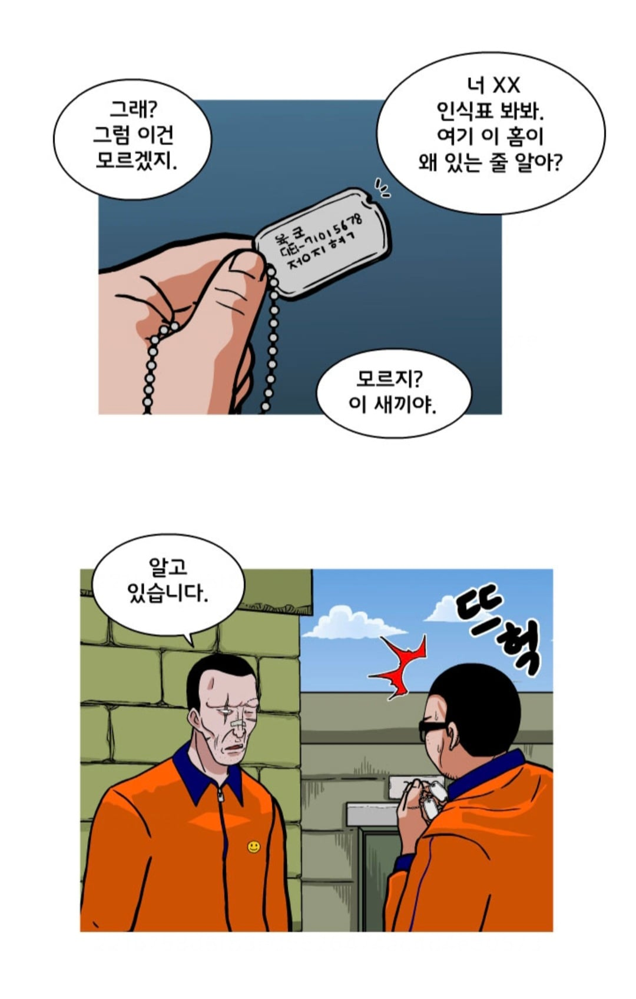
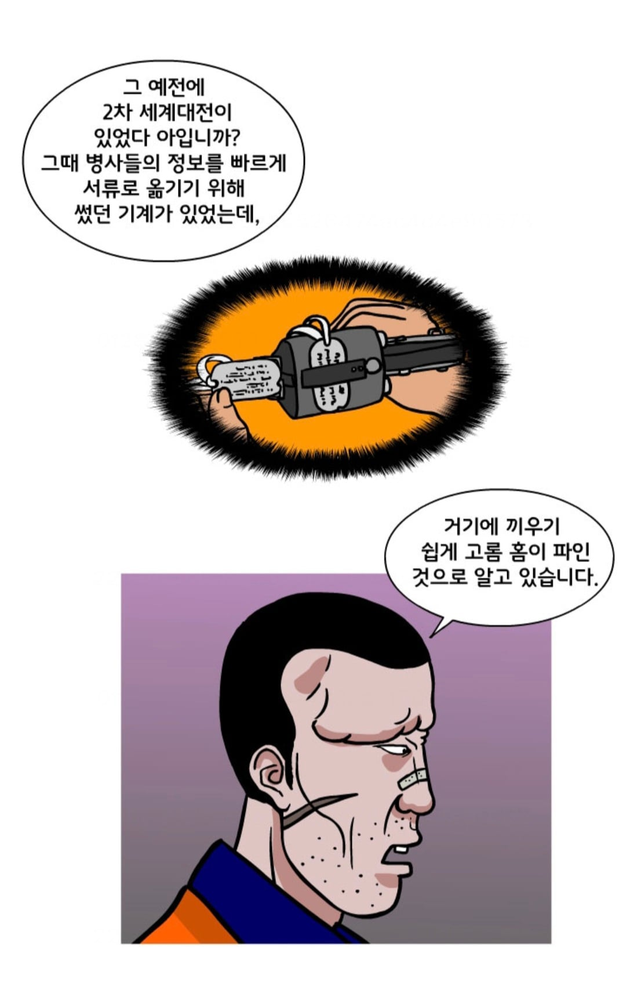

정보) 시신 치아에 끼우는 용도로 만들어진건 헛소문이라고 한다.


정보) 시신 치아에 끼우는 용도로 만들어진건 헛소문이라고 한다.
애초에 목걸이로 목에 걸려있는데 굳이 그걸 벗겨서 박아 넣는 노동력 소모를 하겠냐고
이빨은 헛소문이었구만
근데 홈이랑 앞니랑 무슨 상관임
아무렇게나 박으면 되자너
시신이 훼손돼더라도 이빨사이에 끼우고 턱을 차서 단단하게 박기 위함 이다 라는 낭설이 있엇지
저거 현장에서 만드는 인식표 손으로 레버 꽉 당겨서 찍을때 홈 없으면 표판이 밀려서 삐딱하게 찍히니 저거 그랬을거고
요새는 그냥 기계에서 위아래로 찍어내니까 상관없고
또 다른 대표적인게 종 효과임ㅋㅋ 탱크는 피격당하면 종처럼 울려서 승무원들이 전사한다고ㅋㅋㅋㅋㅋ
아 그럴꺼면 안티탱크 무기 왜 만듦? 오함마 들고 대천차총검술 하지.
사이보그 솔개, 총알은 s자로 날아간다, 인식표 이빨에 넣고 발로차 모두 거짓이었다고?
솔개 현경에 이르면 환골탈태 하는건 진짜임.
이미 다 잘알고있자너....
우리가 타는 비행기들이 사실 양식솔개들임 밥많이먹이면 여객기 적게먹이면 전용기샅은 작은비행기로
최현일이 후임이였어?
정지혁이랑 동기 아니었나? ㅋㅋㅋ 맨날 서로 못잡아먹어서 안달이더만 ㅋㅋ
동기 맞는데 최현일이 후반기 받고와서 후임인줄 알고 저렇게 대하는거임ㅇㅇ 나중에 동기인거 밝혀지고 싸움
시신을 두고 이동 할 경우가 생긴다면 그런거 생각할 여력은 없을테니 알아서 잘 고정시키고 튀십시요
아무리 전시상황 이라지만 적군도 아니고 아군 시체턱을 깐다는게 너무하다싶긴했음ㅋㅋ
지금은 없잖아
나 훈련인가 정훈장교가 글케 알려줬는데 앞니에 끼고 턱 발로차서 고정시킨다고
우리는 그거 거짓말이라고 알려줌ㅋㅋㅋㅋ
홈 있었던가??
예전일인갑네.
홈이 있었는지는 기억이 안나지만 만약 있다면 군번 찍어내는 기계에 사양을 맞춘거겠지 정도의 생각이 드네.
장난친다고 씹었는데 다 우그러짐. 이빨 사이에 절대 못 낌
단순히 똑딱이 문제가 아니라
그것까지도 되게 유서가 깊은 오해임
2차대전 미군시절부터 있었던 얘긴데 헬멧에 총맞으면 목이 돌아간다, 포탄의 폭압에 헬멧이 목을 꺾어버린다, 적이 헬멧을 잡고 목을 돌려버린다 등등...
근데 좀만 생각해보면 말이 안되는게 헬멧은 그때나 지금이나 내외피가 분리된 구조라서 착용자에게 그렇게 충격이 집중되기가 힘듬, 또한 사람의 목은 큰 근육이 덕지덕지 붙어있는 상당히 강한 부위라 힘으로 돌려버리는게 생각보다 힘듦. 영화에서 나오는 뒤에서 목을 돌려서 꺾어버리는 기술같은건 거의 완벽한 과장임.
또 제시한 상황들같은경우 사실 상황 설정 자체가 에바라서 단순히 턱끈이 풀리고 말고가 문제가 아님. 총알이 그렇게 강하면 턱끈이 없어도 머리가 찌그러져 죽을 지경이고 포탄의 압력이 머리통을 돌려버릴 정도면 안면이 박살나고 적이 뒤에 있으면 그거 자체가 좆된거임
그래서 그런 사례들은 제대로 확인된 보고가 된 적이 없음 그냥 현장 소문으로 나돌았을뿐.
근데 중요한건 미국 수뇌부도 이걸 철썩같이 믿고있었어서 쉽게 풀리는 턱끈을 도입하기도 하고 그랬음 병사들도 착용감도 ㅈ같고 불길한 소문도 있으니 다들 턱끈을 풀고 다녔고